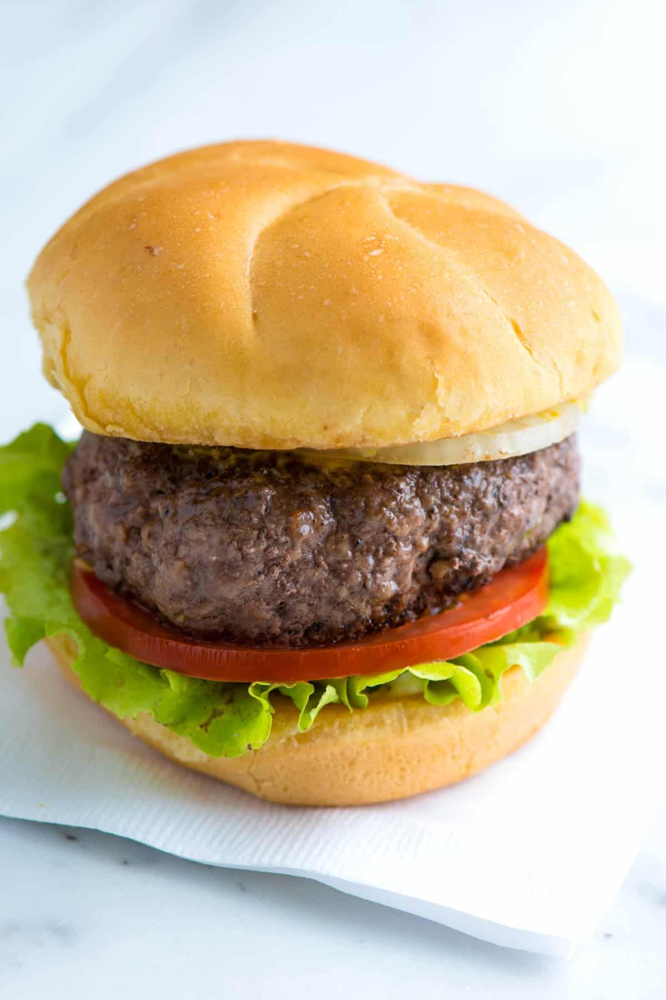

Easy Hamburger

Description
The best burger recipe for summertime grilling! This juicy burger is jam-packed with
all kinds of stuff and has no tasteless bread crumbs. Serve on buns with your favorite
condiments.
Ingredients
- Beef: These basic burgers start with 1 ½ pounds of lean ground beef.
- Onion: A finely chopped onion takes the flavor up a notch.
- Cheese: You’ll need shredded Colby Jack or Cheddar cheese.
- Egg: An egg lends moisture and helps bind the patties together.
- Seasonings, herbs, and sauces: These hamburgers are flavored with an envelope
of dry onion soup mix, fresh garlic, garlic powder, soy sauce, Worcestershire
sauce, dried parsley, dried basil, dried oregano, crushed dried rosemary, salt,
and pepper.
Steps
- Combine the ingredients in a bowl.
- Make four patties.
- Grill the patties until the juices run clear and the meat is no longer pink in the center.
- Cooked on a grill heated to high heat; these patties should be fully cooked after about 4 to
5 minutes per side. You’ll know they’re done when the juices run clear, they’re no
longer pink in the center, and an instant-read thermometer shows at least 165 degrees F.